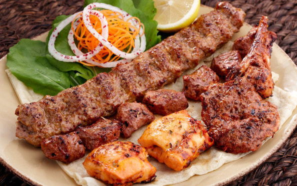

Let's Makan!

My favourite pastime is to explore all around Singapore to find good halal foods.
Singapore is a melting pot of culture. Various types of food can be found in Singapore be it Japanese, Thai, Western, Arabic and many more!
Come and join me in search of good halal foods all around Singapore!